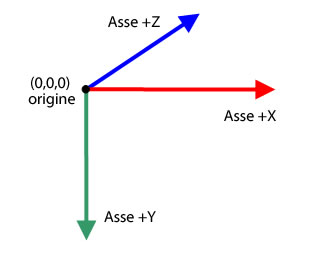
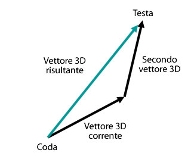

| Pacchetto | flash.geom |
| Classe | public class Vector3D |
| Ereditarietà | Vector3D |
| Versione linguaggio: | ActionScript 3.0 |
| Versioni runtime: | Flash Player 10, AIR 1.5 |
x rappresenta l'asse orizzontale e la proprietà y quello verticale. Nello spazio tridimensionale, la proprietà z rappresenta la profondità. Il valore della proprietà x aumenta mentre l'oggetto si sposta a destra. Il valore della proprietà y aumenta mentre l'oggetto si sposta in basso. Il valore della proprietà z aumenta mentre l'oggetto si sposta lontano dal punto di vista. Se si utilizza la proiezione prospettica e la modifica in scala, l'oggetto appare più grande quando è vicino e più piccolo quando è più lontano dallo schermo. Come in un sistema di coordinate destrorse, l'asse z positivo punta nella direzione opposta all'osservatore, mentre il valore della proprietà z aumenta mentre l'oggetto si allontana dall'occhio dell'osservatore. Il punto di origine (0,0,0) dello spazio globale è l'angolo superiore sinistro dello stage.

La classe Vector3D può anche rappresentare una direzione, quale una freccia dal punto di origine delle coordinate, ad esempio (0,0,0), a un punto finale; oppure un componente a virgola mobile di un modello di colore RGB (Red, Green, Blue).
La notazione basata su quaternione introduce un quarto elemento, la proprietà w, che fornisce ulteriori informazioni sull'orientamento. La proprietà w, ad esempio, può definire un angolo di rotazione di un oggetto Vector3D. La combinazione dell'angolo di rotazione con le coordinate x, y e z può determinare l'orientamento dell'oggetto di visualizzazione. Di seguito è riportata una rappresentazione di elementi Vector3D in notazione di matrici:

Elementi API correlati
 Nascondi proprietà pubbliche ereditate
Nascondi proprietà pubbliche ereditate Mostra proprietà pubbliche ereditate
Mostra proprietà pubbliche ereditate| Proprietà | Definito da | ||
|---|---|---|---|
 | constructor : Object
Un riferimento all'oggetto classe o alla funzione di costruzione per una determinata istanza di oggetto. | Object | |
| length : Number [sola lettura]
La lunghezza, o grandezza, dell'oggetto Vector3D corrente dall'origine (0,0,0) alle coordinate x, y e z dell'oggetto. | Vector3D | ||
| lengthSquared : Number [sola lettura]
Il quadrato della lunghezza dell'oggetto Vector3D corrente, calcolato utilizzando le proprietà x, y e z. | Vector3D | ||
| w : Number
Il quarto elemento di un oggetto Vector3D (oltre alle proprietà x, y e z) può includere dati quale l'angolo di rotazione. | Vector3D | ||
| x : Number
Il primo elemento di un oggetto Vector3D, ad esempio la coordinata x di un punto nello spazio tridimensionale. | Vector3D | ||
| y : Number
Il secondo elemento di un oggetto Vector3D, ad esempio la coordinata y di un punto nello spazio tridimensionale. | Vector3D | ||
| z : Number
Il terzo elemento di un oggetto Vector3D, ad esempio la coordinata z di un punto nello spazio tridimensionale. | Vector3D | ||
| Metodo | Definito da | ||
|---|---|---|---|
Crea un'istanza di un oggetto Vector3D. | Vector3D | ||
Somma il valore degli elementi x, y e z dell'oggetto Vector3D corrente ai valori degli elementi x, y e z di un altro oggetto Vector3D. | Vector3D | ||
[statico]
Restituisce l'angolo in radianti tra due vettori. | Vector3D | ||
Restituisce un nuovo oggetto Vector3D che è la copia esatta dell'oggetto Vector3D corrente. | Vector3D | ||
Copia tutti i dati di vettore dall'oggetto Vector3D di origine all'oggetto Vector3D chiamante. | Vector3D | ||
Restituisce un nuovo oggetto Vector3D che è perpendicolare (ad angolo retto) all'oggetto Vector3D corrente e a un altro oggetto Vector3D. | Vector3D | ||
Diminuisce il valore degli elementi x, y e z dell'oggetto Vector3D corrente in base ai valori degli elementi x, y e z di un oggetto Vector3D specificato. | Vector3D | ||
[statico]
Restituisce la distanza tra due oggetti Vector3D. | Vector3D | ||
Se l'oggetto Vector3D corrente e quello specificato come parametro sono vertici unitari, questo metodo restituisce il coseno dell'angolo tra i due vertici. | Vector3D | ||
Determina se due oggetti Vector3D sono uguali confrontando gli elementi x, y e z dell'oggetto Vector3D corrente con un oggetto Vector3D specificato. | Vector3D | ||
|
Indica se per un oggetto è definita una proprietà specifica. | Object | |
Aumenta il valore degli elementi x, y e z dell'oggetto Vector3D corrente in base ai valori degli elementi x, y e z di un oggetto Vector3D specificato. | Vector3D | ||
|
Indica se un'istanza della classe Object si trova nella catena di prototipi dell'oggetto specificato come parametro. | Object | |
Confronta gli elementi dell'oggetto Vector3D corrente con gli elementi di un oggetto Vector3D specificato per determinare se sono quasi uguali. | Vector3D | ||
Imposta l'oggetto Vector3D corrente sul relativo inverso. | Vector3D | ||
Converte un oggetto Vector3D in un vettore unitario dividendo i primi tre elementi (x, y, z) per la lunghezza del vettore. | Vector3D | ||
Divide il valore delle proprietà x, y e z dell'oggetto Vector3D corrente per il valore della relativa proprietà w. | Vector3D | ||
|
Indica se la proprietà specificata esiste ed è enumerabile. | Object | |
Modifica in scala l'oggetto Vector3D corrente di un valore scalare, ovvero una grandezza. | Vector3D | ||
|
Imposta la disponibilità di una proprietà dinamica per le operazioni cicliche. | Object | |
Imposta i membri dell'oggetto Vector3D sui valori specificati.
| Vector3D | ||
Sottrae il valore degli elementi x, y e z dell'oggetto Vector3D corrente dai valori degli elementi x, y e z di un altro oggetto Vector3D. | Vector3D | ||
|
Restituisce la rappresentazione in formato stringa di questo oggetto, formattato in base alle convenzioni specifiche per le versioni localizzate. | Object | |
Restituisce una rappresentazione in formato stringa dell'oggetto Vector3D corrente. | Vector3D | ||
|
Restituisce il valore di base dell'oggetto specificato. | Object | |
| Costante | Definito da | ||
|---|---|---|---|
| X_AXIS : Vector3D [statico]
L'asse x definito come un oggetto Vector3D con coordinate (1,0,0). | Vector3D | ||
| Y_AXIS : Vector3D [statico]
L'asse y definito come un oggetto Vector3D con coordinate (0,1,0). | Vector3D | ||
| Z_AXIS : Vector3D [statico]
L'asse z definito come un oggetto Vector3D con coordinate (0,0,1). | Vector3D | ||
length | proprietà |
length:Number [sola lettura] | Versione linguaggio: | ActionScript 3.0 |
| Versioni runtime: | Flash Player 10, AIR 1.5 |
La lunghezza, o grandezza, dell'oggetto Vector3D corrente dall'origine (0,0,0) alle coordinate x, y e z dell'oggetto. La proprietà w viene ignorata. Un vettore unitario ha una lunghezza o grandezza pari a uno.
Implementazione
public function get length():NumberElementi API correlati
lengthSquared | proprietà |
lengthSquared:Number [sola lettura] | Versione linguaggio: | ActionScript 3.0 |
| Versioni runtime: | Flash Player 10, AIR 1.5 |
Il quadrato della lunghezza dell'oggetto Vector3D corrente, calcolato utilizzando le proprietà x, y e z. La proprietà w viene ignorata. Utilizzate il metodo lengthSquared() ogni volta che è possibile al posto della più lenta chiamata al metodo Math.sqrt() del metodo Vector3D.length().
Implementazione
public function get lengthSquared():NumberElementi API correlati
w | proprietà |
public var w:Number| Versione linguaggio: | ActionScript 3.0 |
| Versioni runtime: | Flash Player 10, AIR 1.5 |
Il quarto elemento di un oggetto Vector3D (oltre alle proprietà x, y e z) può includere dati quale l'angolo di rotazione. Il valore predefinito è 0.
La notazione basata su quaternione utilizza un angolo come quarto elemento nel calcolo della rotazione tridimensionale. La proprietà w può essere utilizzata per definire l'angolo di rotazione intorno all'oggetto Vector3D. La combinazione dell'angolo di rotazione con le coordinate (x,y,z) determina l'orientamento dell'oggetto di visualizzazione.
Inoltre, la proprietà w può essere utilizzata come fattore di deformazione prospettica per una posizione tridimensionale proiettata o come valore di trasformazione della proiezione nella rappresentazione di una coordinata tridimensionale proiettata nello spazio bidimensionale. Potete ad esempio creare una matrice di proiezione utilizzando la proprietà Matrix3D.rawData che, quando viene applicata a un oggetto Vector3D, produce un valore di trasformazione nel quarto elemento dell'oggetto Vector3D (la proprietà w). Dividendo gli altri elementi dell'oggetto Vector3D per il valore di trasformazione, viene generato un oggetto Vector3D proiettato. Potete utilizzare il metodo Vector3D.project() per dividere i primi tre elementi di un oggetto Vector3D per il quarto elemento dell'oggetto stesso.
Elementi API correlati
x | proprietà |
public var x:Number| Versione linguaggio: | ActionScript 3.0 |
| Versioni runtime: | Flash Player 10, AIR 1.5 |
Il primo elemento di un oggetto Vector3D, ad esempio la coordinata x di un punto nello spazio tridimensionale. Il valore predefinito è 0.
y | proprietà |
public var y:Number| Versione linguaggio: | ActionScript 3.0 |
| Versioni runtime: | Flash Player 10, AIR 1.5 |
Il secondo elemento di un oggetto Vector3D, ad esempio la coordinata y di un punto nello spazio tridimensionale. Il valore predefinito è 0.
z | proprietà |
public var z:Number| Versione linguaggio: | ActionScript 3.0 |
| Versioni runtime: | Flash Player 10, AIR 1.5 |
Il terzo elemento di un oggetto Vector3D, ad esempio la coordinata z di un punto nello spazio tridimensionale. Il valore predefinito è 0.
Vector3D | () | Funzione di costruzione |
public function Vector3D(x:Number = 0., y:Number = 0., z:Number = 0., w:Number = 0.)| Versione linguaggio: | ActionScript 3.0 |
| Versioni runtime: | Flash Player 10, AIR 1.5 |
Crea un'istanza di un oggetto Vector3D. Se non specificate un parametro per la funzione di costruzione, viene creato un oggetto Vector3D con gli elementi (0,0,0,0).
Parametrix:Number (default = 0.) | |
y:Number (default = 0.) | |
z:Number (default = 0.) | |
w:Number (default = 0.) |
add | () | metodo |
public function add(a:Vector3D):Vector3D| Versione linguaggio: | ActionScript 3.0 |
| Versioni runtime: | Flash Player 10, AIR 1.5 |
Somma il valore degli elementi x, y e z dell'oggetto Vector3D corrente ai valori degli elementi x, y e z di un altro oggetto Vector3D. Il metodo add() non modifica l'oggetto Vector3D corrente. Al contrario, restituisce un nuovo oggetto Vector3D con nuovi valori.
Il risultato della somma di due vettori è un vettore risultante. Un modo per visualizzare il risultato consiste nel disegnare un vettore dall'origine, o coda, del primo vettore alla fine, o testa, del secondo vettore. Il vettore risultante è la distanza tra il punto di origine del primo vettore e il punto finale del secondo vettore.

Parametri
a:Vector3D — Un oggetto Vector3D da sommare all'oggetto Vector3D corrente.
|
Vector3D — Un oggetto Vector3D risultante dalla somma dell'oggetto Vector3D corrente a un altro oggetto Vector3D.
|
Elementi API correlati
angleBetween | () | metodo |
public static function angleBetween(a:Vector3D, b:Vector3D):Number| Versione linguaggio: | ActionScript 3.0 |
| Versioni runtime: | Flash Player 10, AIR 1.5 |
Restituisce l'angolo in radianti tra due vettori. Se l'angolo restituito è il radiante inferiore, il primo oggetto Vector3D ruota finché non si allinea con il secondo oggetto Vector3D.
Il metodo angleBetween() è di tipo statico. Potete utilizzarlo direttamente come un metodo della classe Vector3D.
Per convertire gradi in radianti, potete utilizzare la formula seguente:
radian = Math.PI/180 * degree
Parametri
a:Vector3D — Il primo oggetto Vector3D.
| |
b:Vector3D — Il secondo oggetto Vector3D.
|
Number — L'angolo tra due oggetti Vector3D.
|
clone | () | metodo |
copyFrom | () | metodo |
public function copyFrom(sourceVector3D:Vector3D):void| Versione linguaggio: | ActionScript 3.0 |
| Versioni runtime: | Flash Player 11, AIR 3.0, Flash Lite 4 |
Copia tutti i dati di vettore dall'oggetto Vector3D di origine all'oggetto Vector3D chiamante.
Parametri
sourceVector3D:Vector3D — L'oggetto Vector3D da cui copiare i dati.
|
crossProduct | () | metodo |
public function crossProduct(a:Vector3D):Vector3D| Versione linguaggio: | ActionScript 3.0 |
| Versioni runtime: | Flash Player 10, AIR 1.5 |
Restituisce un nuovo oggetto Vector3D che è perpendicolare (ad angolo retto) all'oggetto Vector3D corrente e a un altro oggetto Vector3D. Se le coordinate dell'oggetto Vector3D restituito sono (0,0,0), significa che i due oggetti Vector3D sono paralleli tra di essi.

Potete usare il prodotto vettoriale normalizzato di due vertici di una superficie poligonale con il vettore normalizzato del punto di vista della videocamera o dell'occhio per ottenere un prodotto scalare. Il valore del prodotto scalare può identificare se una superficie di un oggetto tridimensionale viene nascosto dal punto di vista.
Parametri
a:Vector3D — Un secondo oggetto Vector3D.
|
Vector3D — Un nuovo oggetto Vector3D che è perpendicolare all'oggetto Vector3D corrente e all'oggetto Vector3D specificato come parametro.
|
Elementi API correlati
decrementBy | () | metodo |
public function decrementBy(a:Vector3D):void| Versione linguaggio: | ActionScript 3.0 |
| Versioni runtime: | Flash Player 10, AIR 1.5 |
Diminuisce il valore degli elementi x, y e z dell'oggetto Vector3D corrente in base ai valori degli elementi x, y e z di un oggetto Vector3D specificato. A differenza del metodo Vector3D.subtract(), il metodo decrementBy() modifica l'oggetto Vector3D corrente e non restituisce un nuovo oggetto Vector3D.
Parametri
a:Vector3D — L'oggetto Vector3D che contiene i valori da sottrarre dall'oggetto Vector3D corrente.
|
Elementi API correlati
distance | () | metodo |
public static function distance(pt1:Vector3D, pt2:Vector3D):Number| Versione linguaggio: | ActionScript 3.0 |
| Versioni runtime: | Flash Player 10, AIR 1.5 |
Restituisce la distanza tra due oggetti Vector3D. Il metodo distance() è di tipo statico. Potete utilizzarlo direttamente come un metodo della classe Vector3D per ottenere la distanza euclidea tra due punti tridimensionali.
Parametri
pt1:Vector3D — Un oggetto Vector3D come primo punto tridimensionale.
| |
pt2:Vector3D — Un oggetto Vector3D come secondo punto tridimensionale.
|
Number — La distanza tra due oggetti Vector3D.
|
dotProduct | () | metodo |
public function dotProduct(a:Vector3D):Number| Versione linguaggio: | ActionScript 3.0 |
| Versioni runtime: | Flash Player 10, AIR 1.5 |
Se l'oggetto Vector3D corrente e quello specificato come parametro sono vertici unitari, questo metodo restituisce il coseno dell'angolo tra i due vertici. I vertici unitari sono vertici che puntano nella stessa direzione ma la cui lunghezza è uno. Rimuovono la lunghezza del vettore come fattore del risultato. Potete utilizzare il metodo normalize() per convertire un vettore in vettore unitario.
Il metodo dotProduct() trova l'angolo tra due vertici. Viene utilizzato anche nei calcoli per il backface culling (eliminazione delle facce posteriori) o l'illuminazione. Il backface culling è una procedura che consente di determinare quali superfici vengono nascoste dal punto di vista. Potete utilizzare i vertici normalizzati dal punto di vista della videocamera, o dell'occhio, e il prodotto vettoriale dei vertici di una superficie poligonale per ottenere il prodotto scalare. Se il prodotto scalare è inferiore a zero, la superficie è rivolta verso la videocamera o l'osservatore. Se i due vertici unitari sono perpendicolari tra di essi, sono ortogonali e il prodotto scalare è pari a zero. Se i due vertici unitari sono paralleli tra di essi, il prodotto scalare è pari a uno.
Parametri
a:Vector3D — Il secondo oggetto Vector3D.
|
Number — Un valore scalare che corrisponde al prodotto scalare dell'oggetto Vector3D corrente e dell'oggetto Vector3D specificato.
|
Elementi API correlati
equals | () | metodo |
public function equals(toCompare:Vector3D, allFour:Boolean = false):Boolean| Versione linguaggio: | ActionScript 3.0 |
| Versioni runtime: | Flash Player 10, AIR 1.5 |
Determina se due oggetti Vector3D sono uguali confrontando gli elementi x, y e z dell'oggetto Vector3D corrente con un oggetto Vector3D specificato. Se i valori di questi elementi sono gli stessi, i due oggetti Vector3D sono uguali. Se il secondo parametro opzionale è impostato su true, vengono confrontati tutti e quattro gli elementi degli oggetti Vector3D, inclusa la proprietà w.
Parametri
toCompare:Vector3D — L'oggetto Vector3D da confrontare con l'oggetto Vector3D corrente.
| |
allFour:Boolean (default = false)w degli oggetti Vector3D viene utilizzata nel confronto.
|
Boolean — Un valore true se l'oggetto Vector3D specificato è uguale all'oggetto Vector3D corrente; false se non è uguale.
|
Elementi API correlati
incrementBy | () | metodo |
public function incrementBy(a:Vector3D):void| Versione linguaggio: | ActionScript 3.0 |
| Versioni runtime: | Flash Player 10, AIR 1.5 |
Aumenta il valore degli elementi x, y e z dell'oggetto Vector3D corrente in base ai valori degli elementi x, y e z di un oggetto Vector3D specificato. A differenza del metodo Vector3D.add(), il metodo incrementBy() modifica l'oggetto Vector3D corrente e non restituisce un nuovo oggetto Vector3D.
Parametri
a:Vector3D — L'oggetto Vector3D da sommare all'oggetto Vector3D corrente.
|
Elementi API correlati
nearEquals | () | metodo |
public function nearEquals(toCompare:Vector3D, tolerance:Number, allFour:Boolean = false):Boolean| Versione linguaggio: | ActionScript 3.0 |
| Versioni runtime: | Flash Player 10, AIR 1.5 |
Confronta gli elementi dell'oggetto Vector3D corrente con gli elementi di un oggetto Vector3D specificato per determinare se sono quasi uguali. I due oggetti Vector3D sono quasi uguali se il valore di tutti gli elementi dei due vertici sono uguali, oppure il risultato del confronto è compreso nell'intervallo di tolleranza. La differenza tra due elementi deve essere minore del numero specificato come parametro tolerance. Se il terzo parametro opzionale è impostato su true, vengono confrontati tutti e quattro gli elementi degli oggetti Vector3D, inclusa la proprietà w. In caso contrario, vengono inclusi nel confronto solo gli elementi x, y e z.
Parametri
toCompare:Vector3D — L'oggetto Vector3D da confrontare con l'oggetto Vector3D corrente.
| |
tolerance:Number — Un numero che determina il fattore di tolleranza. Se la differenza tra i valori dell'elemento Vector3D specificato nel parametro toCompare e l'elemento Vector3D corrente è inferiore al numero di tolleranza, i due valori sono considerati quasi uguali.
| |
allFour:Boolean (default = false)w degli oggetti Vector3D viene utilizzata nel confronto.
|
Boolean — Un valore true se l'oggetto Vector3D specificato è quasi uguale all'oggetto Vector3D corrente; false se non è uguale.
|
Elementi API correlati
negate | () | metodo |
public function negate():void| Versione linguaggio: | ActionScript 3.0 |
| Versioni runtime: | Flash Player 10, AIR 1.5 |
Imposta l'oggetto Vector3D corrente sul relativo inverso. L'oggetto inverso viene anche considerato l'opposto dell'oggetto originale. Il valore delle proprietà x, y e z dell'oggetto Vector3D corrente viene modificato in -x, -y e -z.
normalize | () | metodo |
public function normalize():Number| Versione linguaggio: | ActionScript 3.0 |
| Versioni runtime: | Flash Player 10, AIR 1.5 |
Converte un oggetto Vector3D in un vettore unitario dividendo i primi tre elementi (x, y, z) per la lunghezza del vettore. I vertici unitari sono vertici che hanno una direzione ma la cui lunghezza è uno. Semplificano i calcoli vettoriali rimuovendo la lunghezza come fattore.
RestituisceNumber — La lunghezza dell'oggetto Vector3D corrente.
|
project | () | metodo |
public function project():void| Versione linguaggio: | ActionScript 3.0 |
| Versioni runtime: | Flash Player 10, AIR 1.5 |
Divide il valore delle proprietà x, y e z dell'oggetto Vector3D corrente per il valore della relativa proprietà w.
Se l'oggetto Vector3D corrente è il risultato della moltiplicazione di un oggetto Vector3D per un oggetto di proiezione Matrix3D, la proprietà w può includere il valore di trasformazione. Il metodo project() può quindi completare la proiezione dividendo gli elementi per la proprietà w. Utilizzate la proprietà Matrix3D.rawData per creare un oggetto di proiezione Matrix3D.
scaleBy | () | metodo |
public function scaleBy(s:Number):void| Versione linguaggio: | ActionScript 3.0 |
| Versioni runtime: | Flash Player 10, AIR 1.5 |
Modifica in scala l'oggetto Vector3D corrente di un valore scalare, ovvero una grandezza. Gli elementi x, y e z di un oggetto Vector3D vengono moltiplicati per il numero scalare specificato nel parametro. Se ad esempio il vettore viene modificato in scala per dieci, il risultato è un vettore dieci volte più lungo. Il valore scalare può anche modificare la direzione del vettore. Moltiplicando il vettore per un numero negativo, se ne inverte la direzione.
Parametri
s:Number — Un moltiplicatore (scalare) utilizzato per la modifica in scala di un oggetto Vector3D.
|
setTo | () | metodo |
subtract | () | metodo |
public function subtract(a:Vector3D):Vector3D| Versione linguaggio: | ActionScript 3.0 |
| Versioni runtime: | Flash Player 10, AIR 1.5 |
Sottrae il valore degli elementi x, y e z dell'oggetto Vector3D corrente dai valori degli elementi x, y e z di un altro oggetto Vector3D. Il metodo subtract() non modifica l'oggetto Vector3D corrente. Al contrario, restituisce un nuovo oggetto Vector3D con nuovi valori.
Parametri
a:Vector3D — L'oggetto Vector3D da sottrarre dall'oggetto Vector3D corrente.
|
Vector3D — Un nuovo oggetto Vector3D che corrisponde alla differenza tra l'oggetto Vector3D corrente e l'oggetto Vector3D specificato.
|
Elementi API correlati
toString | () | metodo |
public function toString():String| Versione linguaggio: | ActionScript 3.0 |
| Versioni runtime: | Flash Player 10, AIR 1.5 |
Restituisce una rappresentazione in formato stringa dell'oggetto Vector3D corrente. La stringa contiene i valori delle proprietà x, y e z.
String — Una stringa contenente i valori delle proprietà x, y e z.
|
X_AXIS | Costante |
public static const X_AXIS:Vector3D| Versione linguaggio: | ActionScript 3.0 |
| Versioni runtime: | Flash Player 10, AIR 1.5 |
L'asse x definito come un oggetto Vector3D con coordinate (1,0,0).
Y_AXIS | Costante |
public static const Y_AXIS:Vector3D| Versione linguaggio: | ActionScript 3.0 |
| Versioni runtime: | Flash Player 10, AIR 1.5 |
L'asse y definito come un oggetto Vector3D con coordinate (0,1,0).
Z_AXIS | Costante |
public static const Z_AXIS:Vector3D| Versione linguaggio: | ActionScript 3.0 |
| Versioni runtime: | Flash Player 10, AIR 1.5 |
L'asse z definito come un oggetto Vector3D con coordinate (0,0,1).
Tue Jun 12 2018, 02:44 PM Z